Depuis le décès, en février 2017, du colonel Gaël Taburet, le sergent-chef mécanicien André Peyronie était le dernier survivant à avoir connu l’épopée de cette unité française en Russie. Il vient de nous quitter à l’âge de 99 ans, dans la nuit du 9 au 10 décembre 2019.
André Peyronie est né le 8 mai 1920 à Albi dans le département du Tarn. Fils d’un employé de la Société minière du Tarn, André suit, après l’obtention de son certificat d’études primaires, une formation de forgeron. Le 16 février 1939, il signe un engagement volontaire pour cinq ans à l’Intendance militaire d’Albi au titre du Bataillon de l’Air n°109 de Tours et est affecté à l’école de Rochefort, le 22 du même mois. Il est nommé caporal-chef le 30 octobre suivant. Il obtient son brevet de mécanicien avion (n°11.792), le 3 novembre 1939 et est affecté au Bataillon de l’Air n°106 de Bordeaux. Le 3 février 1940, il est affecté sur la base de Salon-de-Provence puis nommé au grade de sergent dès le 16 avril suivant.
Après l’attaque aéroterrestre du 10 mai 1940 et alors que la situation militaire française est alarmante, il participe, sur la Base aérienne de Châteauroux où il vient d’être affecté, à des actions de sabotage pour empêcher que des avions français tombent entre les mains de l’ennemi. Afin d’échapper à la police allemande, il est désigné pour intégrer un détachement de renfort envoyé à destination du Levant et embarque dans le port de Marseille le 27 novembre 1940. Il arrive à Beyrouth au Liban le 8 décembre 1940 où les forces restées fidèles à Vichy ne tarderont pas à affronter les Français Libres. En 1941, les troupes vichystes ayant été défaites, le sergent Peyronie s’engage dans les Forces aériennes françaises libres [FAFL]. Très peu, parmi ses camarades, en feront autant. Le 5 août 1941, il signe à Rayak au Liban un engagement volontaire sous le matricule 31.754 dans les Forces aériennes françaises libres (FAFL) et, le 31 août suivant, est affecté au groupe de chasse « Alsace » pour participer aux opérations de Libye.
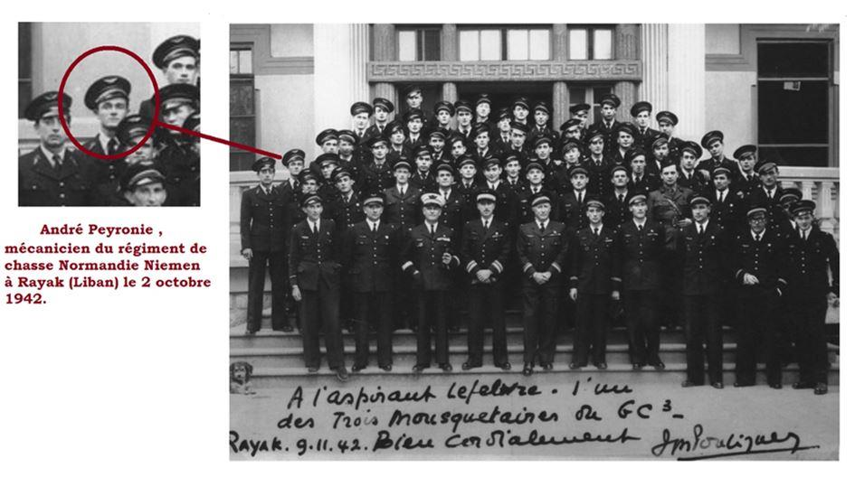À la demande du commandant Joseph Pouliquen, il est affecté au groupe de chasse (GCIII), « Normandie », le 15 septembre 1942 et il arrive en Russie, à Ivanovo, le 29 novembre de la même année. Il est des premiers à arriver dans cette localité russe d’environ 300 000 habitants, se trouvant approximativement à 300 km au nord-est de Moscou, la base étant située au nord de la ville. Sous les ordres du commandant Jean Tulasne, il participe avec les pilotes au choix du type d’appareils dont ils disposeront. Ils ont, en effet, le choix, d’autant plus que le général De Gaulle leur a dit à Rayak : « Vous choisirez le meilleur appareil sans vous soucier de la nationalité de son constructeur ». Quelques heures de vol aux commandes du Yak 7 (version du Yak 1 en double commande destinée à l’instruction) suffisent à convaincre Jean Tulasne des avantages présentés par le Yak, notamment sa maniabilité en vol et sa rusticité qui est un atout dans les conditions climatiques extrêmes qui sont celles du front de l’Est.
Dès lors que ce choix est fait, l’instruction et l’entraînement peut commencer. Plusieurs mois vont être nécessaires pour permettre aux pilotes français de se familiariser avec le matériel soviétique et aux mécaniciens d’appréhender la technologie des Yak 1 et 7.
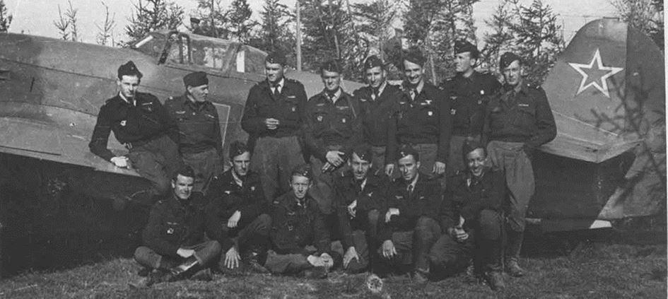En mars 1943, alors qu’André Peyronie vient d’être nommé sergent-chef, pilotes et mécaniciens français arrivent à leur première base opérationnelle, à 80 km du front, Plotniani-Zavod, au sud-est de Moscou, où ils sont accueillis par le
Général Khondiakov, commandant la 1ère armée aérienne, qui, par ce geste, veut montrer l’importance que l’armée soviétique attache à la présence des Français.
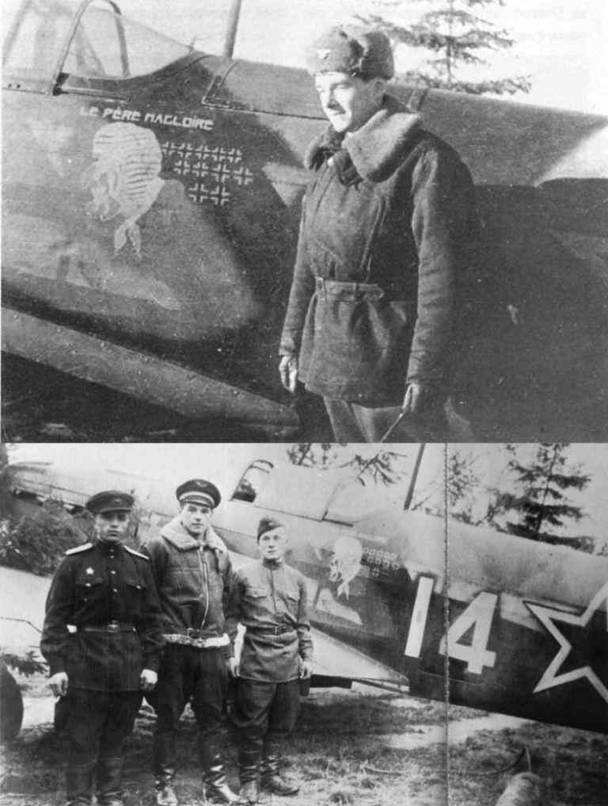André Peyronie est désigné responsable de l’entretien du « Père Magloire », le Yak n°14 du sous-lieutenant Marcel Lefèvre. Ce dernier remarquable pilote ne ménagera pas son monture et André Peyronie pourra en faire constat au retour des missions de soutien aux troupes soviétiques dans la poche d’Orel durant les mois de juillet et août 1943.
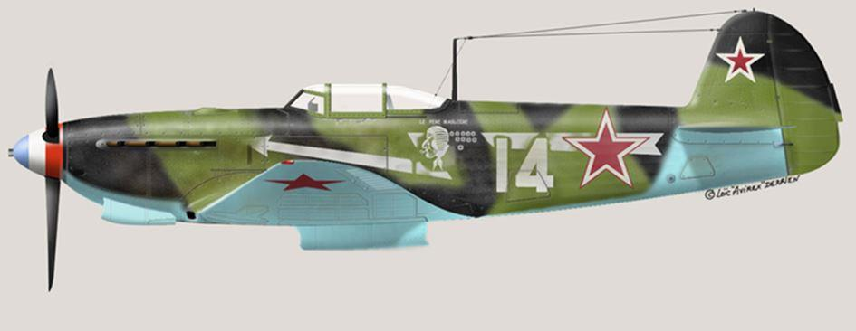En août 1943, comme l’ensemble du personnel technique du « Normandie », il est muté au Moyen-Orient et le 30 octobre il revient sur la base de Rayak.
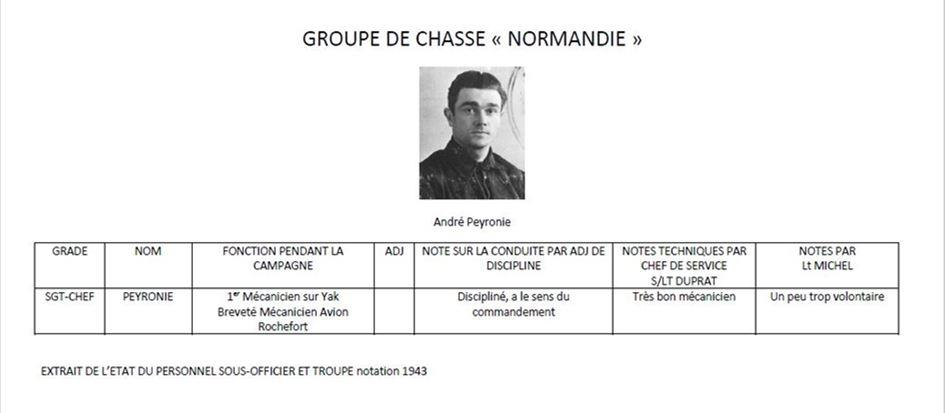André Peyronie n’aura pas à subir, en mai 1944, la douloureuse épreuve de la mort de son binôme, le lieutenant Marcel Lefèvre, posé en flammes sur le terrain de Doubrovka et qui décédera le 5 juin 1944 des suites de ses blessures à l’hôpital Sokolniki de Moscou.
Affecté au Groupe de Chasse III « Ardennes », le 1er janvier 1944, André Peyronie embarque à Port-Saïd le 14 mai 1944 à destination d’Oran. Il prend part aux opérations de Provence puis fait mouvement avec son unité pour être engagé dans les combats en Alsace. Après avoir servi un temps en Allemagne, il est démobilisé et quitte l’armée d’active le 9 octobre 1945. Rendu à la vie civile, il entame alors une carrière dans l’immobilier, profession qu’il exercera jusqu’à sa retraite.
Il retournera néanmoins plusieurs fois en Russie, un pays qui lui était resté cher.
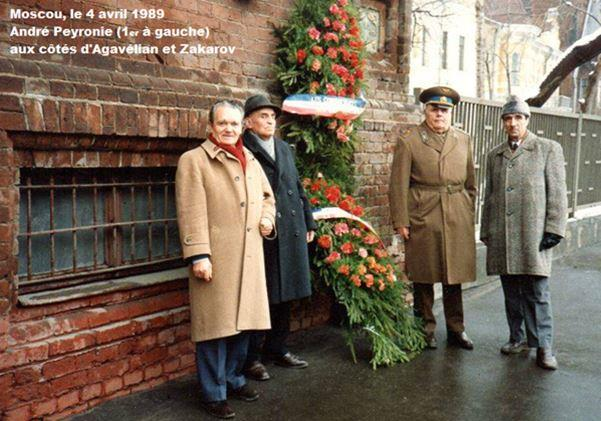J’exprime au peuple russe mes plus vifs remerciements pour la gentillesse avec laquelle nous avions été accueillis et pour tous les avions qu’ils nous ont à l’époque permis de choisir parmi les meilleurs ! Du fond du cœur merci, racontait André Peyronie en 2016, des sanglots dans la voix, devant la caméra.
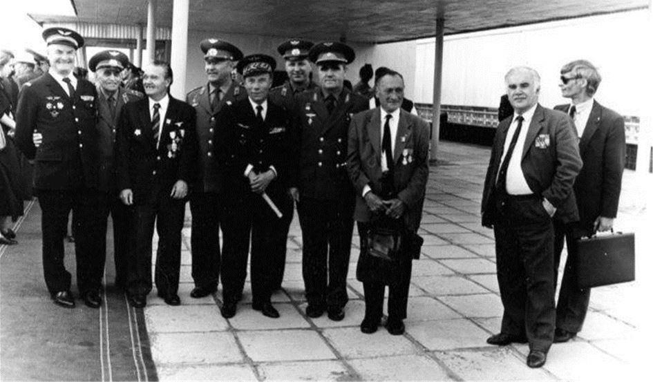André Peyronie s'investira fortement, sur Lyon et sa région, au sein de la section du Rhône de la Fédération nationale des combattants volontaires. Il contribuera notamment à ce que le nom de « Normandie-Niémen » soit donné à un square de la ville de Lyon en 1987.
De même, il participera activement à l'organisation de la cérémonie rendue à Lyon en 2012, à l'occasion du centenaire de la naissance de son compagnon d'armes, le sous-lieutenant Adrien Bernavon, « Mort pour la France » le 16 juillet 1943, dans la région d'Orel (Russie).
Durant toute sa vie André Peyronie n'aura de cesse de rendre hommage aux 42 pilotes du « Normandie-Niémen » qui firent le sacrifice de leur vie pour la liberté et c'est toujours avec une extrême émotion qu'il évoquera ses compagnons d'armes disparus.
André Peyronie avait fait sienne cette phrase prononcée par le général de Gaulle en septembre 1942, sur la base de Rayak : "La loi suprême, c'est la libération de la Patrie !"
En 2006, à Lyon, il est décoré de l’ordre d’Alexandre Nevski par le général Belykh, attaché militaire de Défense à l’ambassade de Russie en France.
Le 8 mai 2015, jour de son 95ème anniversaire, André Peyronie est décoré de la croix de chevalier de la Légion d'honneur lors d'une cérémonie qui se déroule sur la place Bellecour de Lyon. La décoration lui est remise par le lieutenant-colonel Patrick Bryant, commandant du RC 2/30 Normandie-Niémen, stationné sur la base aérienne 118 de Mont-de-Marsan (Landes).
Le 22 février 2018, au cours d’une cérémonie à la maison des anciens combattants d’Anse, André Peyronie, s’est vu remettre, des mains de son excellence Pavel Latushka, ambassadeur de la République du Bélarus en France les insignes de l’ordre de l’Honneur par décret d’Aleksandre Loukachenko, président de la république de Biélorussie.
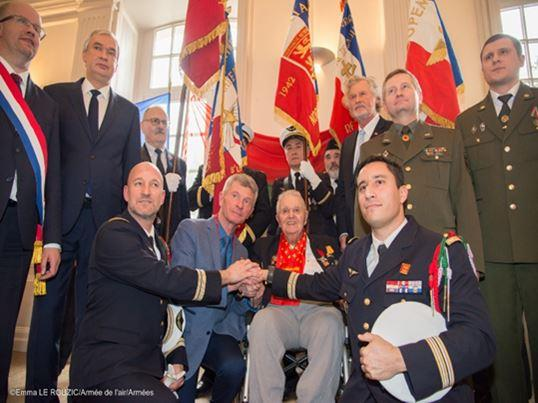De nombreuses autorités civiles et militaires étaient présentes. Nous citerons, par exemple, le député Christophe Lejeune, président du groupe d’amitié France-Biélorussie à l’Assemblée nationale, le sénateur François-Noël Buffet, le député Bernard Perrut, le général (2S) Philippe Lafond, le lieutenant-colonel Mickaël Fonck, commandant l’escadron de chasse « Normandie-Niémen » de Mont-de-Marsan, ainsi qu’une délégation militaire biélorusse.
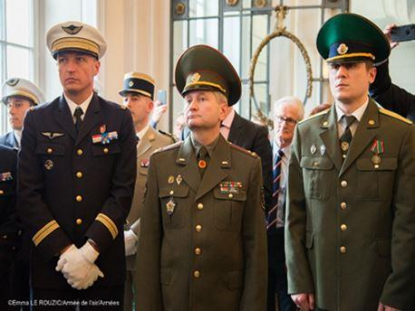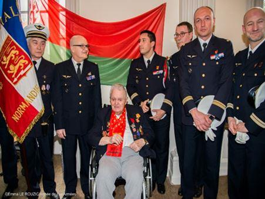Le 21 mars 2019, André Peyronie se voit décerner la médaille d'or de la CANSOF (Confédération des associations nationales de sous-officiers et officiers français). Cette distinction lui est remise par Jacques Mulard, ancien président national de l'ANSORAA (Association nationale des sous-officiers de réserve de l'armée de l'Air).
Le 14 juin 2019, André Peyronie reçoit la médaille commémorative du 75ème anniversaire de la libération du Bélarus des mains de Son Excellence Monsieur Igor Fissenko, ambassadeur de la République de Biélorussie en France.
Enfin, derniers honneurs de la République, André Peyronie est promu au grade d'officier de l'ordre national du Mérite, par décret du 30 novembre 2019.
Depuis ce 10 décembre, les hommages à André Peyronie se succèdent. L’annonce de son décès a été faite par Geneviève Darrieussecq, la secrétaire d’État auprès de la ministre des Armées.
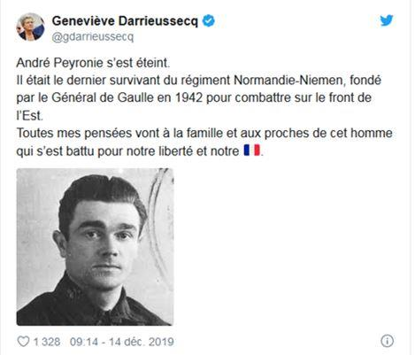Mais les aviateurs du « Normandie Niémen » n’ont pas oublié non plus leur illustre ancien…
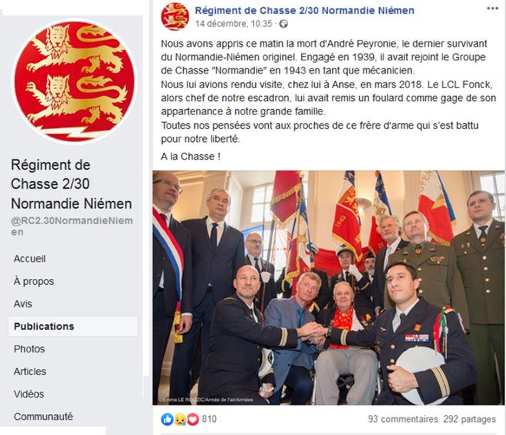« Chers amis, c’est avec une grande tristesse que je vous fais part du décès d’André Peyronie dans sa centième année. En espérant que son dernier vol ait été dans la douceur. C’est la disparition du dernier vétéran français du « Normandie-Niémen », de notre dernier lien avec ceux qui ont fait l’histoire de notre merveilleuse unité de la France Libre. Puisse-t-il reposer en paix auprès de ses frères d’armes », ainsi s’exprime Pierre Roure, président du Mémorial Normandie-Niémen.
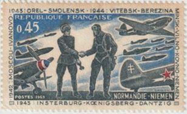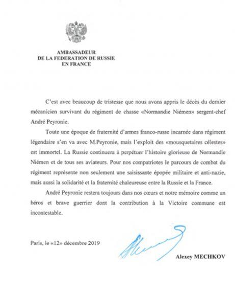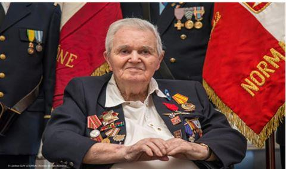Enfin dernier hommage à André Peyronie de la part de ce pays qui lui était resté un peu sa seconde patrie, adressé par l’Ambassadeur de Russie en France S.E.M. Alexey MESHKOV :
C’est avec beaucoup de tristesse que nous avons appris le décès du dernier mécanicien survivant du régiment de chasse « Normandie Niémen » sergent-chef André Peyronie.
Toute une époque de fraternité d’armes franco-russe incarnée dans régiment légendaire s’en va avec M. Peyronie, mais l’exploit des « mousquetaires célestes » est immortel. La Russie continuera à perpétuer l’histoire glorieuse de Normandie Niémen et de tous ses aviateurs. Pour nos compatriotes le parcours de combat du régiment représente non seulement une saisissante épopée militaire et anti-nazie, mais aussi la solidarité et la fraternité chaleureuse entre la Russie et la France.
André Peyronie restera toujours dans nos cœurs et notre mémoire comme un héros et brave guerrier dont la contribution à la Victoire commune est incontestable.
Partager cette page